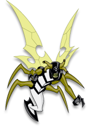

Insectóide é basicamente um inseto gigante fortemente armado com numerosas estratégias para vencer as batalhas. Tem uma ampla visão devido aos 4 olhos em hastes flexíveis além de uma inc´rivel habilidade de voo.
Além de grandes asas para voar, possui um ferrão poderoso e uma gosma grudenda capaz de imobilizar os inimigos. Secreta um óleo natural para lubrificar as juntas do exoesqueleto e por isso ele fede muito, podendo sentir seu cheiro a longas distâncias.
Espécie: Lepdopiterrano
Planeta de Origem: Lepdopterra
Curiosidade:
Apesar de seu cheiro insurpotável, sua gosma é bastante apreciada na culinária intergalática, você comeria?
